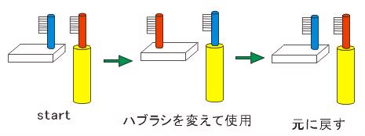
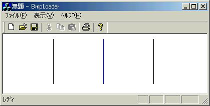

今回は、メモリデバイスコンテキストを学習します。通常のデバイスコンテキストと同じ形を持ったデバイスコンテキストをメモリ上に作成するために、「メモリデバイスコンテキスト」と言うのですが、参考書によっては「裏メモリ」や「裏画面」とも言います。まずはこのメモリデバイスコンテキストについて説明すると共に、実際にそれを作成してみたいと思います。
| 4.メモリデバイスコンテキストとは何か？ |
デバイスコンテキスト
デバイスコンテキストとは「デバイス-描画プログラム間の中継ぎ」だと思えば簡単だと思います。つまり同一の描画プログラムを記述することによって、ディスプレイやプリンタなどユーザによって異なる出力デバイスであっても同じように出力できるようにした中継ぎ機構です。このデバイスコンテキストを使用することで、プログラマはユーザのデバイスそしてデバイスを動かすためのドライバを特に意識することなく、画一的に描画を行うことが可能になります。
「デバイスコンテキストは6つの手(マニュピレータ)を持っている」と考えると分かりやすいと思います。6つの手にはそれぞれ、GDIオブジェクトという描画に必要な道具を1種類につき1つずつ持っています。GDIオブジェクトには以下の種類があります。
CPen(ペン)
CBrush(ブラシ)
CFont(フォント)
CBitmap(ビットマップ)
CPalette(パレット)
CRgn(リージョン)
デバイスコンテキストはただの「手」に過ぎないので、描画道具の性質を決めるのはGDIオブジェクトです。したがって赤い太いペンという性質はGDIオブジェクトが保存しており、デバイスコンテキストはそれを持たされているというと思えばイメージはつかみやすいでしょう。そしてそれぞれのGDIオブジェクトを持つ手は決まっていて1つずつしかないので、白いブラシと赤いブラシを同時に持つことは出来ません。
全てのウィンドウは、そのウィンドウ専用のデバイスコンテキストを持ちます。ですからあるウィンドウに何かを描画したい時には、そのウィンドウ専用のデバイスコンテキストに指示を出せばよいということになります。このデバイスコンテキストを扱うために、MFCではCDCクラスというものが用意されています。
メモリデバイスコンテキスト
メモリデバイスコンテキストは、決して特別なものではありません。通常のデバイスコンテキストはウィンドウと結びついてるだけで、ウィンドウから切り離してしまえば、メモリデバイスコンテキストと同じ物だと思っても特に支障はないでしょう。それは通常のデバイスコンテキストも、メモリデバイスコンテキストも、MFCではCDCクラスのインスタンスであることからも容易に想像は出来るでしょう。ただ、メモリ・・・というだけあって、通常のデバイスコンテキストが実際に見せるためのものだとしたら、メモリデバイスコンテキストは見せないものです。したがって、これらが表裏一体となって使用されることで意味を持ちます。
| 5.デバイスコンテキストの基本的な使い方（重要） |
ここではデバイスコンテキストの基本的な使い方を説明します。通常のデバイスコンテキストはもちろん、メモリデバイスコンテキストでも使い方は同じです。そしてこの節は非常に重要なので必ず目を通しておいてください。
デバイスコンテキスト(以下DCと記述します)は、6つのGDIオブジェクトを持つ「手」が存在し、それぞれ1つの種類のGDIオブジェクトしか持つことができないとあっさり言いましたが、実際に描画する時は、同じGDIオブジェクトの道具を持ちたいときがあります(例えば赤いペンと白いペンを交互に使いたい時など)。でも制約上赤いペンか白いペンかどちらか１つしか持つことができません。したがって持ち変えるという作業を行います。人間が赤いペンを持っているときに、黒いペンで何かを書きたいときには、ペンを持ちかえるのと同じことです。ところで、デバイスコンテキストは必ず6つのGDIオブジェクトを持っていなくてはならないといいましたが、持ち変えるときにそれまで持っていたGDIオブジェクトを必ず保存しておかなくてはなりません。そして持ち替えたGDIオブジェクトを利用してデバイスコンテキストの操作が終わったら、保存しておいたGDIオブジェクトをまた持たせて挙げなくてはなりません。これがMFCによるデバイスコンテキストの利用の掟です。
この掟は実生活でもおこりうることです。
ある仲良し兄弟が、同じ電動ハブラシを使っているとします。(当然取り外しできるハブラシで、ハブラシは個々のものを使っています）。弟が歯を磨こうとしたら兄の赤色ハブラシが本体にとりつけられたままでした。弟は兄のハブラシを取り外し、自分の青のハブラシを取り付けて使用しました。歯磨きが終わったので、弟は自分のハブラシを元に戻し、兄のハブラシをまたとりつけてあげました。
| Fig2_1.jpg ある兄弟による電動ハブラシの使用 |
|  |
メモリデバイスコンテキストの実際の作成については次章で詳しく行います。最後にデバイスコンテキストの動作を確かめるためにも、簡単なプログラムを組んで見ましょう。
| 以下のプログラムを組んで見ましょう。(BmpLoaderView.cpp) |
| void
CBmpLoaderView::OnDraw(CDC* pDC) { CBmpLoaderDoc* pDoc = GetDocument();} |
| 実行結果 |
|  処理 初め持っていたディフォルトのペンで線を引く(左) ペンを青に持ち替えて、ディフォルトのペンをストックしておき、線を引く(中央) ストックされていたディフォルトのペンに持ち替えて線を引く(右) |